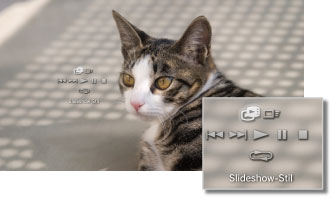

Foto > Anzeigen von Bildern als Slideshow
Anzeigen von Bildern als Slideshow
Alle Bilder werden automatisch der Reihe nach angezeigt. Wählen Sie das Icon für einen Ordner oder Datenträger mit Bildern aus und drücken Sie dann die START-Taste. Die Slideshow beginnt.
Anmerkungen
- Die Slideshow lässt sich auch von den Kontrollmenüs oder vom Menü „Optionen“ für ein Bild aus starten.
- Wenn sich die Slideshow nicht mit der START-Taste starten lässt, versuchen Sie es über die Kontrollmenüs.
Verwenden der Slideshow-Kontrollmenüs
Wenn Sie während einer Slideshow die  -Taste drücken, werden die Kontrollmenüs angezeigt.
-Taste drücken, werden die Kontrollmenüs angezeigt.

 |
Slideshow-Stil | Wählen Sie eins von fünf Anzeigemustern für die Slideshow aus. |
|---|---|---|
 |
Slideshow-Tempo | Wählen Sie eine von drei Geschwindigkeiten für die Slideshow: [Schnell] > [Normal] > [Langsam]. |
 |
Zurück | Sprung zum vorherigen Bild. |
 |
Weiter | Sprung zum nächsten Bild. |
 |
Wiedergabe | Starten der Slideshow. |
 |
Pause | Unterbrechen der Slideshow. |
 |
Stopp | Beenden der Slideshow. |
 |
Wiederholung | Wiederholte Wiedergabe der Slideshow. |
Anmerkung
Falls (Slideshow-Stil) auf [Fotoalbum] oder [Fotoalbum 2] gesetzt ist, führen Sie mit dem rechten Stick des SIXAXIS™ Wireless-Controllers Funktionen wie Vergrößern oder Verkleinern des Bildes oder Anpassen des Slideshow-Tempos aus.
Wiedergeben einer Slideshow während der Musikwiedergabe
Sie können eine Slideshow und Musik gleichzeitig wiedergeben lassen.
1. |
Starten Sie unter |
|---|---|
2. |
Drücken Sie die PS-Taste. |
3. |
Wechseln Sie zu |
 (Musik) die Musikwiedergabe.
(Musik) die Musikwiedergabe. (Foto), wählen Sie die in der Slideshow anzuzeigenden Bilder bzw. den Ordner aus und drücken Sie dann die START-Taste.
(Foto), wählen Sie die in der Slideshow anzuzeigenden Bilder bzw. den Ordner aus und drücken Sie dann die START-Taste.Anmerkungen
- Wenn Sie während der gleichzeitigen Wiedergabe die PS-Taste drücken, wird das XMB™-Menü angezeigt und Sie können die Musik oder Bilder wechseln.
- Wenn Sie die Funktion beenden wollen, müssen Sie die Wiedergabe der Slideshow und die Musikwiedergabe einzeln beenden. Stoppen Sie zunächst die Bild- oder Musikwiedergabe und wählen Sie dann das Stück bzw. Bild, das noch wiedergegeben wird, aus und stoppen Sie die Wiedergabe.
- Sie können nicht gleichzeitig eine Slideshow und eine Super Audio CD wiedergeben lassen.
- Wenn
 (Einstellungen) >
(Einstellungen) >  (Musik-Einstellungen) > [Ausgangsrate] auf [44,1/88,2/176,4 kHz] gesetzt ist, können Sie Musikinhalte nicht gleichzeitig mit einer Slideshow abspielen.
(Musik-Einstellungen) > [Ausgangsrate] auf [44,1/88,2/176,4 kHz] gesetzt ist, können Sie Musikinhalte nicht gleichzeitig mit einer Slideshow abspielen.
Hinweis
Super Audio CDs können auf einigen PS3™-Systemen nicht abgespielt werden. Näheres dazu finden Sie unter [Typen abspielfähiger Discs].